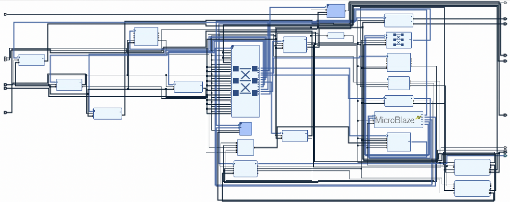
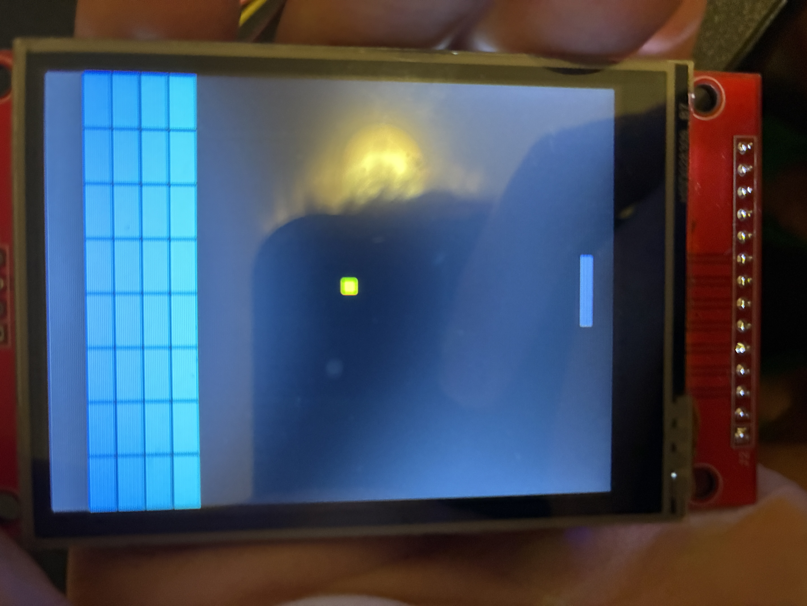

◉
Arcade control
The rotary encoder moves the paddle left and right, while its integrated click begins play after setup.
ECE 253 Final Project · Brian Janicki
This project is a Breakout-style game running on a MicroBlaze processor. The system combines an event-driven game engine using the QP-nano framework, custom LCD graphics, board controls, and a rotary encoder into a complete embedded arcade experience.

Design and Implementation
For controlling the game, the user can click any of the four buttons on the Urbana board to select the number of lives they’ll be playing with while in the main menu, and then clicking the encoder begins the game. If the player doesn’t click any button before beginning the game, the number of lives defaults to 3.
Once the game begins, an in-game timer increments by 1 each tick, and the game tick speed is 60Hz, so at the end of the game I divide the timer by 60 in order to print out the correct time spent playing the game. Turning the encoder left and right moves the paddle left and right in 10 pixel intervals, and the ball moves at a speed of 2 pixels per tick. Clicking the encoder pauses the game, and disables the game tick interrupts until unpaused, such that it halts the game movements as well as the in-game timer. Upon clicking the encoder again, the game and timer resumes. The buttons and encoder click are debounced by having a 30 ms debounce interval, in which no inputs are accepted, and the rotary encoder implements the same quadrature transition system for rotations.
As noted on the main menu screen, the point values for bricks scale from front to back, such that the harder to hit bricks in the back row of the layout are worth 6 times as many points as the front row. If the user ever misses hitting the ball with the paddle, the number of lives decreases by one, and the ball is respawned in the center of a screen and initially moves away from the player. I initially had the ball respawn coming toward the player, however during playtesting, users mentioned that it was too hard to react quickly enough upon ball respawn, so by making the ball move away from the player, it gave them enough time to react and be ready to hit the ball.
Upon losing all lives, the game transitions to the game over state, which displays the player’s score, and upon clicking any button transitions back to the main menu. If the player breaks all the bricks on the board, the game transitions to the victory state, which displays the score, as well as the time spent in game. If two players are competing and both beat the game, then they can use the in-game timer as a way to determine who the real winner is based on who cleared the board faster. Upon clicking any button, the game transitions back to the main menu screen, and the gameflow cycle continues.
The rotary encoder moves the paddle left and right, while its integrated click begins play after setup.
Menu, active play, pause, victory, and game-over states are modeled with the lightweight QP-nano framework.
Players choose one to four lives using the Urbana board buttons, with scoring and elapsed time shown at the end of a run.
System architecture
Interrupt-driven inputs are translated into game signals. The game active object handles state transitions, gameplay updates, collision detection, and rendering to the SPI display.


Hosts the MicroBlaze processor and delivers the board-button inputs.
Renders the menu, game board, HUD, victory screen, and game-over screen.
Provides responsive paddle movement and a click-to-start action.
In action
The game uses colorful brick layouts, a live paddle-and-ball loop, and dedicated end screens to create a complete arcade flow.